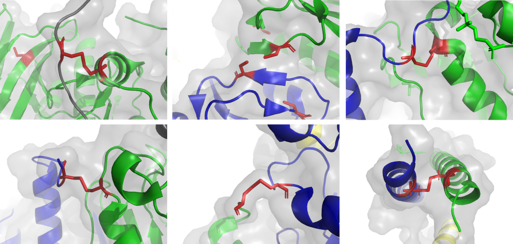

a tool for identifying drug-targetable redox-active disulphides
Coleman, P. et al. (2026). ReDisulphID: A discovery platform for thiol redox sensors identifies a druggable site regulating p53 activation. Redox Biology.